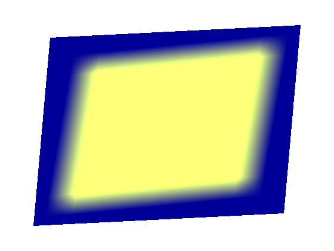

Minimal example demonstrating the use of frame buffer objects (FBO). This example blurs the output image.
from vispy import oogl
from vispy import app
from vispy import gl
import numpy as np
# Create vetices
vPosition = np.array([ [-0.8, -0.8, 0.0], [+0.7, -0.7, 0.0],
[-0.7, +0.7, 0.0], [+0.8, +0.8, 0.0,] ], np.float32)
vPosition_full = np.array([ [-1.0, -1.0, 0.0], [+1.0, -1.0, 0.0],
[-1.0, +1.0, 0.0], [+1.0, +1.0, 0.0,] ], np.float32)
vTexcoord = np.array([ [0.0, 0.0], [0.0, 1.0],
[1.0, 0.0], [1.0, 1.0] ], np.float32)
# For initial quad
VERT_SHADER1 = """ // simple vertex shader
#version 120
attribute vec3 a_position;
void main (void) {
gl_Position = vec4(a_position, 1.0);
}
"""
FRAG_SHADER1 = """ // simple fragment shader
#version 120
uniform vec4 u_color;
void main()
{
gl_FragColor = u_color;
}
"""
# To render the result of the FBO
VERT_SHADER2 = """ // textured vertex shader
#version 120
attribute vec3 a_position;
attribute vec2 a_texcoord;
varying vec2 v_texcoord;
void main (void) {
// Pass tex coords
v_texcoord = a_texcoord;
// Calculate position
gl_Position = vec4(a_position.x, a_position.y, a_position.z, 1.0);
}
"""
FRAG_SHADER2 = """ // textured fragment shader
#version 120
uniform sampler2D u_texture1;
varying vec2 v_texcoord;
const float c_zero = 0.0;
const int c_sze = 5;
void main()
{
float scalefactor = 1.0 / (c_sze * c_sze * 4 + 1);
gl_FragColor = vec4(c_zero, c_zero, c_zero, 1.0);
for (int y=-c_sze; y<=c_sze; y++) {
for (int x=-c_sze; x<=c_sze; x++) {
vec2 step = vec2(x,y) * 0.01;
vec3 color = texture2D(u_texture1, v_texcoord.st+step).rgb;
gl_FragColor.rgb += color * scalefactor;
}
}
}
"""
SIZE = 50
class Canvas(app.Canvas):
def __init__(self):
app.Canvas.__init__(self)
self.size = 560, 420
# Create texture to render to
self._rendertex = oogl.Texture2D()
# Create FBO, attach the color buffer and depth buffer
self._fbo = oogl.FrameBuffer(self._rendertex, oogl.RenderBuffer())
# Create program to render a shape
self._program1 = oogl.Program( oogl.VertexShader(VERT_SHADER1),
oogl.FragmentShader(FRAG_SHADER1) )
self._program1['u_color'] = 0.9, 1.0, 0.4, 1
self._program1['a_position'] = oogl.VertexBuffer(vPosition)
# Create program to render FBO result
self._program2 = oogl.Program( oogl.VertexShader(VERT_SHADER2),
oogl.FragmentShader(FRAG_SHADER2) )
self._program2['a_position'] = oogl.VertexBuffer(vPosition)
self._program2['a_texcoord'] = oogl.VertexBuffer(vTexcoord)
self._program2['u_texture1'] = self._rendertex
def on_resize(self, event):
width, height = event.size
gl.glViewport(0, 0, width, height)
def on_paint(self, event):
# Set geometry (is no-op if the size does not change)
self._fbo.set_size(*self.size)
# Draw the same scene as as in hello_quad.py, but draw it to the FBO
with self._fbo:
# Init
gl.glClearColor(0,0.0,0.5,1);
gl.glClear(gl.GL_COLOR_BUFFER_BIT | gl.GL_DEPTH_BUFFER_BIT)
# Draw
self._program1.draw(gl.GL_TRIANGLE_STRIP)
# Now draw result to a full-screen quad
# Init
gl.glClearColor(1,1,1,1);
gl.glClear(gl.GL_COLOR_BUFFER_BIT | gl.GL_DEPTH_BUFFER_BIT)
# Draw
self._program2.draw(gl.GL_TRIANGLE_STRIP)
if __name__ == '__main__':
c = Canvas()
c.show()
app.run()